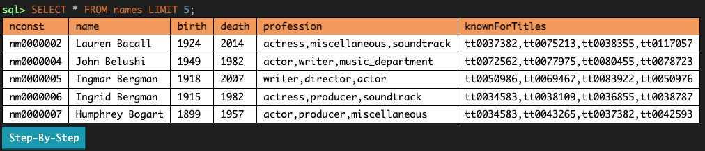

实验 11 解答
参考答案
概念自测
- SQL 命令中各子句出现的顺序是什么？
SELECT(第 3 步)FROM(第 1 步)WHERE(第 1 步)GROUP BY(第 2 步)HAVING(第 2 步)ORDER BY(第 3 步);- 什么时候该用 where，什么时候该用 having？
- having 用于在 group by 之后对聚合后的行进行筛选，where 则用于尚未应用 group by 时。
- 在 SQL 命令中如何给表起别名？
- table AS alias
必做题
SQL
一条 SELECT 语句基于输入行描述一张输出表。编写一条 SELECT 语句的步骤是：
- 用
FROM和WHERE子句描述输入行。 - 用
GROUP BY和HAVING子句对这些行分组，并确定哪些组应该作为输出行出现。 - 用
SELECT和ORDER BY子句设置输出行和列的格式与顺序。
SELECT (第 3 步) FROM (第 1 步) WHERE (第 1 步) GROUP BY (第 2 步) HAVING (第 2 步) ORDER BY (第 3 步);
第 1 步可能涉及连接表（用逗号），从而形成由已有表中的两行或更多行组成的输入行。
WHERE、GROUP BY、HAVING 和 ORDER BY 子句都是可选的。
如果你需要温习 SQL，可以查看下拉框。你也可以直接跳到题目部分，卡住了再回到这里查阅。
SQL 基础
示例表
下面例子中用到的表叫做 big_game，它记录了每年 Big Game 的比分。这张表有三列：berkeley、stanford 和 year。

CREATE TABLE big_game (
berkeley INTEGER, stanford INTEGER, year INTEGER);
INSERT INTO big_game (berkeley, stanford, year) VALUES
(30, 7, 2002),
(28, 16, 2003),
(17, 38, 2014);你可以在 sqlite 中这样查看它：
sqlite> .mode column
sqlite> SELECT * FROM big_game;
berkeley stanford year
-------- -------- ----
30 7 2002
28 16 2003
17 38 2014.mode column 命令，也没关系，忽略它即可。
从表中查询
通常，我们会用 SELECT 语句从已有的表创建一张新表：
SELECT [columns] FROM [tables] WHERE [condition] ORDER BY [columns] LIMIT [limit];让我们拆解一下这条语句：
SELECT [columns]告诉 SQL 我们希望在输出表中包含给定的列；[columns]是用逗号分隔的列名列表，用*可以选择所有列FROM [table]告诉 SQL 我们要选择的列来自给定的表WHERE [condition]对输出表进行筛选，只保留值满足给定[condition]的行，[condition] 是一个布尔表达式ORDER BY [columns]按照给定的逗号分隔的列列表对输出表中的行排序；默认情况下值按升序（ASC）排列，但你可以用 DESC 按降序排列LIMIT [limit]用整数[limit]限制输出表中的行数
下面是一些例子：
从 big_game 表中选出 Berkeley 的所有比分，但只包含 2002 年之后的年份的比分：
sqlite> SELECT berkeley FROM big_game WHERE year > 2002;
28
17选出 Berkeley 获胜的那些年份里两所学校的比分：
sqlite> SELECT berkeley, stanford FROM big_game WHERE berkeley > stanford;
30|7
28|16选出 Stanford 得分超过 15 分的年份：
sqlite> SELECT year FROM big_game WHERE stanford > 15;
2003
2014SQL 运算符
SELECT、WHERE 和 ORDER BY 子句中的表达式可以包含以下一个或多个运算符：
- 比较运算符：
=、>、<、<=、>=、<>或!=（“不等于”） - 布尔运算符：
AND、OR - 算术运算符：
+、-、*、/ - 连接运算符：
||
输出每年 Berkeley 的得分与 Stanford 的得分的比值：
sqlite> select berkeley * 1.0 / stanford from big_game;
0.447368421052632
1.75
4.28571428571429输出两支球队得分都超过 10 分的那些年份的比分之和：
sqlite> select berkeley + stanford from big_game where berkeley > 10 and stanford > 10;
55
44输出一张只有一列一行的表，其中包含值 “hello world”：
sqlite> SELECT "hello" || " " || "world";
hello world连接（Joins）
要从多张表中选择数据，我们可以使用连接（join）。连接有很多种类型，但我们只需要关心内连接（inner join）。要对两张或更多表执行内连接，只需把它们都列在 SELECT 语句的 FROM 子句中：
SELECT [columns] FROM [table1], [table2], ... WHERE [condition] ORDER BY [columns] LIMIT [limit];我们可以从多张不同的表中选择，也可以多次从同一张表中选择。
假设我们有下面这张表，其中包含 2002 年以来 Cal 的橄榄球队主教练姓名：
CREATE TABLE coaches (
name TEXT,
start INTEGER,
end INTEGER
);
INSERT INTO coaches (name, start, end)
VALUES
('Jeff Tedford', 2002, 2012),
('Sonny Dykes', 2013, 2016),
('Justin Wilcox', 2017, 2025);当我们连接两张或更多表时，默认输出是 笛卡尔积。例如，如果把 big_game 与 coaches 连接，我们会得到以下结果：
sqlite> SELECT * FROM big_game JOIN coaches;
berkeley stanford year name start end
-------- -------- ---- ------------- ----- ----
30 7 2002 Jeff Tedford 2002 2012
30 7 2002 Sonny Dykes 2013 2016
30 7 2002 Justin Wilcox 2017 2025
28 16 2003 Jeff Tedford 2002 2012
28 16 2003 Sonny Dykes 2013 2016
28 16 2003 Justin Wilcox 2017 2025
17 38 2014 Jeff Tedford 2002 2012
17 38 2014 Sonny Dykes 2013 2016
17 38 2014 Justin Wilcox 2017 2025如果我们想把每场比赛与那个赛季的教练对应起来，就需要在 WHERE 子句中比较两张表的列：
sqlite> SELECT * FROM big_game JOIN coaches ON year >= start AND year <= end
...> ;
berkeley stanford year name start end
-------- -------- ---- ------------ ----- ----
30 7 2002 Jeff Tedford 2002 2012
28 16 2003 Jeff Tedford 2002 2012
17 38 2014 Sonny Dykes 2013 2016在上面的查询中，没有列名是有歧义的。例如，很明显 start 列来自 coaches 表，因为 big_game 表中没有同名的列。然而，如果某个列名在被连接的多张表中都存在，或者我们把一张表与它自己连接，就必须使用点号和别名来消除列名的歧义。
举个例子，我们来看看 big_game 中的某场比赛与之前任何一场比赛之间，各队的比分差是多少。由于这张表中的每一行代表一场比赛，为了比较两场比赛，我们必须把 big_game 与它自己连接：
sqlite> SELECT b.Berkeley - a.Berkeley, b.Stanford - a.Stanford, a.Year, b.Year
...> FROM big_game AS a, big_game AS b WHERE a.Year < b.Year;
b.Berkeley - a.Berkeley b.Stanford - a.Stanford year year
----------------------- ----------------------- ---- ----
-2 9 2002 2003
-13 31 2002 2014
-11 22 2003 2014在上面的查询中，我们给第一个 big_game 表起别名为 a，给第二个 big_game 表起别名为 b。之后就可以用别名加点号来引用各表的列，例如用 a.Berkeley、a.Stanford 和 a.Year 从第一张表中选取数据。
SQL 聚合
下面是另一张示例表，这次是关于航班的：
CREATE TABLE flights (
departure TEXT, arrival TEXT, price INTEGER);
INSERT INTO flights (departure, arrival, price) VALUES
('SFO', 'LAX', 97),
('SFO', 'AUH', 848),
('LAX', 'SLC', 115),
('SFO', 'PDX', 192),
('AUH', 'SEA', 932),
('SLC', 'PDX', 79),
('SFO', 'LAS', 40),
('SLC', 'LAX', 117),
('SEA', 'PDX', 32),
('SLC', 'SEA', 42),
('SFO', 'SLC', 97),
('LAS', 'SLC', 50),
('LAX', 'PDX', 89);应用 聚合函数（例如 MAX(column)）会把多行的值合并成一行输出。
默认情况下，我们合并表中所有行的值。例如，如果我们想统计 flights 表中的行数，可以这样写：
sqlite> SELECT COUNT(*) from FLIGHTS;
13如果我们想把相似的行归为一组，并在这些组内进行聚合运算，该怎么办呢？这时我们使用 GROUP BY 子句。
再看一个例子。对于每个不同的出发地，把出发机场相同的所有行归为一组。然后选出 price 列并应用 MIN 聚合，得到该组中最便宜的出发航班的价格。最终结果是一张包含出发机场和最便宜出发航班的表。
sqlite> SELECT departure, MIN(price) FROM flights GROUP BY departure;
departure MIN(price)
--------- ----------
AUH 932
LAS 50
LAX 89
SEA 32
SFO 40
SLC 42就像我们可以用 WHERE 筛选行一样，我们也可以用 HAVING 筛选组。通常 HAVING 子句中应该使用聚合函数。假设我们想查看所有至少有两次出发的机场：
sqlite> SELECT departure FROM flights GROUP BY departure HAVING COUNT(*) >= 2;
departure
---------
LAX
SFO
SLC注意 COUNT(*) 聚合只是统计每个组中的行数。假设我们要统计不同机场的数量，那么可以使用下面这个查询：
sqlite> SELECT COUNT(DISTINCT departure) AS destinations FROM flights;
destinations
------------
6这会列出 flights 表中所有不同的出发机场（在这个例子里是：SFO、LAX、AUH、SLC、SEA 和 LAS）。
用法
首先，检查作业文件中是否有名为 sqlite_shell.py 的文件。如果没有看到它，或者使用它时遇到问题，请向下滚动到 Troubleshooting 一节，了解如何下载官方预编译的 SQLite 二进制文件，然后再继续。
你可以在 Terminal 或 Git Bash 中用以下命令启动一个交互式 SQLite 会话：
python3 sqlite_shell.py解释器运行期间，你可以输入 .help 查看一些可以运行的命令。
要退出 SQLite 解释器，请输入 .exit 或 .quit，或者按 Ctrl-C。记住，如果按回车后看到 ...>，那很可能是你漏写了一个 ;。
你也可以通过下面的方式运行一个 .sql 文件中的所有语句：
（这里我们以 lab11.sql 文件为例。）
运行你的代码，然后立即退出 SQLite。
python3 sqlite_shell.py < lab11.sql运行你的代码，然后打开一个交互式 SQLite 会话，这类似于用交互式
-i标志运行 Python 代码。python3 sqlite_shell.py --init lab11.sql
可视化 SQL
AHUT_1A SQL 网页解释器是可视化和调试 SQL 语句的绝佳工具！
要开始使用，请访问 code.cs61a.org，然后在启动界面上点击 Start SQL interpreter。
作业中用到的多数表都已经可以直接使用，所以让我们试着执行一条 SELECT 语句：

除了显示输出表的可视化表示外，"Step-by-step" 按钮还能让我们逐步执行 SQL，并把发生的每一次变换可视化。对于可以查看表中所有行的较小数据集，这种可视化往往很有用。但对于 movies 数据集来说，这种可视化就没那么有用了，因为每张表都有数千行。
IMDb
IMDb 1000 数据集包含来自 Internet Movie Database 的 1000 部评分最高的热门电影（得票数前 0.2%）。
这个数据集中的表相当大，所以用 LIMIT 只查看某张表中的几行往往很有用。要查看 titles 表中几行示例数据（该表包含每部电影的信息）：
% sqlite3
sqlite> .read imdb1000.sql
sqlite> .tables
crew names principals ratings titles以 .read 开头的命令会读入 imdb1000.sql 中的 SQL 命令，这些命令会用电影数据集创建新表。.tables 命令会列出所有表。
下面是本 lab 中你会用到的表和列。.mode column 命令可以改善格式，但它在 sqlite_shell.py 中不起作用，而且是可选的。
sqlite> .mode column
sqlite> SELECT tconst, title, year, runtime FROM titles LIMIT 3;
tconst title year runtime
--------- ------------------------------- ---- -------
tt0012349 The Kid 1921 68
tt0013442 Nosferatu: A Symphony of Horror 1922 94
tt0015864 The Gold Rush 1925 95
sqlite> SELECT tconst, ordering, nconst, character FROM principals LIMIT 3;
tconst ordering nconst character
--------- -------- --------- ---------
tt0012349 1 nm0000122 A Tramp
tt0012349 2 nm0701012 The Woman
tt0012349 3 nm0001067 The Child
sqlite> SELECT nconst, name, birth, death FROM names LIMIT 3;
nconst name birth death
--------- -------------- ----- -----
nm0000002 Lauren Bacall 1924 2014
nm0000004 John Belushi 1949 1982
nm0000005 Ingmar Bergman 1918 2007tconst 是每部电影的唯一标识符（t 代表 title），nconst 是每个人的唯一标识符。这些标识符对于连接不同表中的行很有用，例如，要确定某部电影的评分，我们可以在 titles 表中找到这部电影的 nconst，然后在 ratings 表中查找该 nconst。
Q1：最新的电影
创建一张表 newest，其中包含数据集中最新的 10 部电影，且有两个列：
title：电影名称year：电影的制作年份
如果愿意，可以试试猜一猜结果中会包含哪些电影。
SELECT ____, ____
FROM ____
ORDER BY ____
LIMIT ____;- 使用
FROM指定从哪张表读取数据。 - 使用
ORDER BY按电影的新旧程度排序。 - 使用
LIMIT只选出最新的 10 部电影。 - 使用
SELECT把电影名称和年份放入输出中。
CREATE table newest AS
SELECT title, year
FROM titles
ORDER BY year DESC
LIMIT 10;python3 ok -q newestQ2：有狗的电影
创建一张 dog_movies 表，为每个名字中包含 "dog" 这个词的电影角色各包含一行，且有两个列：
title（text）：电影名称character（text）：狗角色的名字
如果一部电影有多个狗角色，那么它可能会出现多次。
SELECT _____, _____
FROM _____ JOIN _____ ON _____
WHERE ____ LIKE "%dog%";- 使用
FROM、JOIN和ON把titles表和principals表中的信息结合起来。 - 使用
WHERE只选出包含 "dog" 的角色。 - 使用
SELECT把电影名称和角色放入输出中。
CREATE table dog_movies AS
SELECT title, character
FROM titles JOIN principals
ON titles.tconst = principals.tconst
WHERE character LIKE "%dog%";python3 ok -q dog_moviesQ3：主演中的主演
创建一张 leads 表，它有两个列：
name（text）：演员姓名lead_roles（integer）：该演员担任主演的电影数量
你可以通过在 principals 表中查找 ordering 为 1 的行来找到主演角色。只选出担任主演超过 10 部电影的演员。
SELECT ____, ____ AS lead_roles
FROM ____ JOIN ____ ON ____
WHERE ____
GROUP BY names.nconst
HAVING count(*) > 10;- 使用
FROM和ON把principals表和names表中的信息结合起来。 - 使用
WHERE只选出主演角色。 - 使用
GROUP BY为每个人创建一行。 - 使用
HAVING只输出主演角色超过 10 个的人。 - 使用
SELECT把这个人的姓名和其角色数量放入输出中。
CREATE table leads AS
SELECT name, count(*)
FROM names JOIN principals
ON names.nconst=principals.nconst
WHERE ordering=1
GROUP BY names.nconst
HAVING count(*) > 10;python3 ok -q leadsQ4：长电影
创建一个 long_movies 表，其中包含每个年代中时长超过 3 小时的电影数量。long_movies 有两个列：
decade（字符串）：年代，例如1920scount（数字）：该年代中时长超过 3 小时（180 分钟）的电影数量
对于 IMDB 1000 数据集，结果将是：
+--------+-------+
| decade | count |
+--------+-------+
| 1930s | 1 |
| 1950s | 2 |
| 1960s | 2 |
| 1970s | 3 |
| 1980s | 2 |
| 1990s | 7 |
| 2000s | 4 |
| 2010s | 3 |
| 2020s | 4 |
+--------+-------+sqlite> SELECT (192 * 10) || "s";
1920sSELECT ____ AS decade, ____ AS count
FROM ____
WHERE ____
GROUP BY ____;- 使用
FROM和WHERE只选出时长大于 180 分钟的电影。 - 使用
GROUP BY把同一个年代的所有电影归为一组。 - 使用
SELECT为每个年代构造形如1920s的字符串，并选出每个年代的电影数量。
CREATE table long_movies AS
SELECT ((year / 10) * 10) || "s" AS decade, COUNT(*) AS count
FROM titles
WHERE runtime>180
GROUP BY year / 10;用 ok 测试你的代码：
python3 ok -q long_movies本地查看得分
你可以在本地查看本次作业每道题的得分，运行：
python3 ok --score